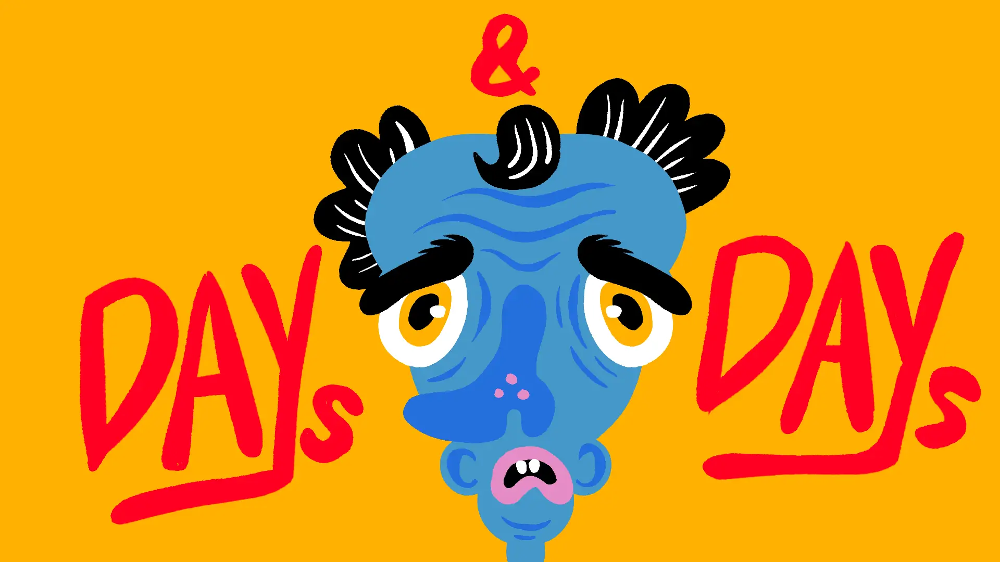
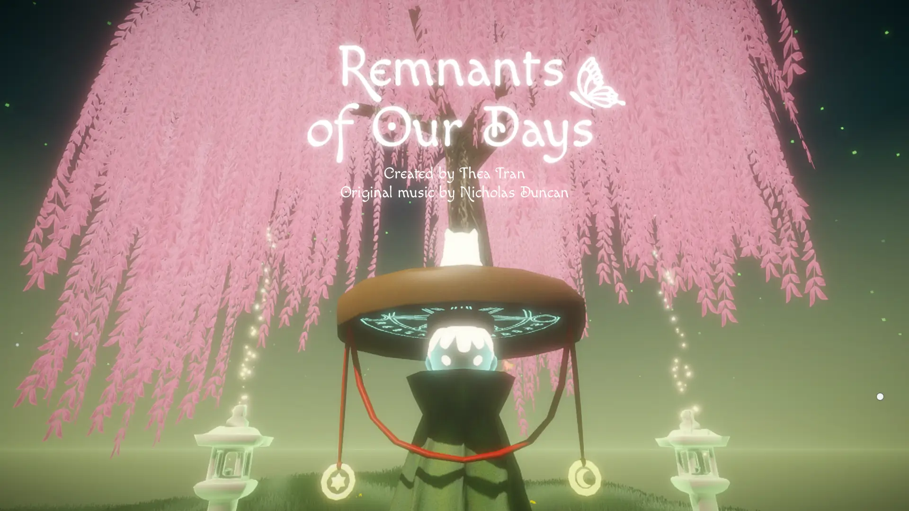
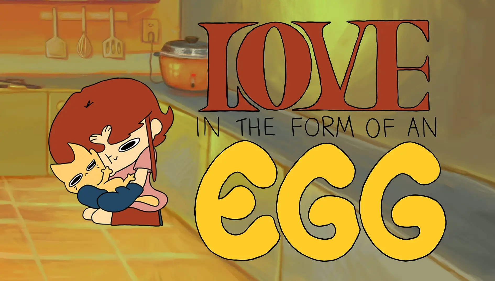
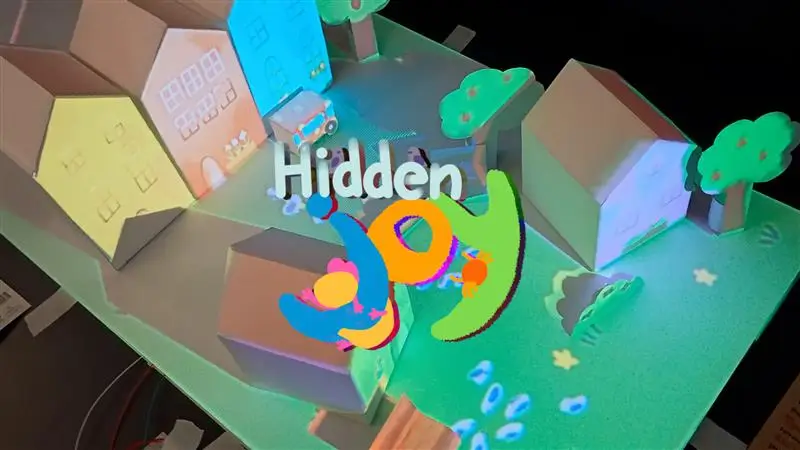

SCHEDULE
ARTISTS
PROJECTS
10:00
Opening remarks
11:00
Keynote — practice as research
13:30
Panel — loops, systems, feedback
15:00
Studio walkthroughs
17:00
Screening + close
01
Mira Kowalczyk — moving image
02
Teo Alvarez — sound & installation
03
Nadia Okonkwo — generative print
04
Rue Hasegawa — animation
05
Sam Delacroix — sculpture, video
06
Imogen Fairweather — performance

Days, Days

Remnants of Our Days

Love in the Form of an Egg

Hidden Joy
LOOPS ON LOOPS
/26
/SYMPOSIUM